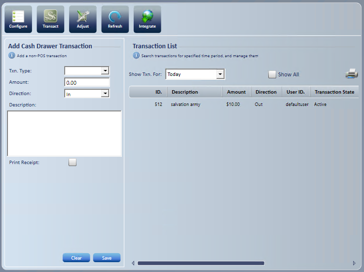
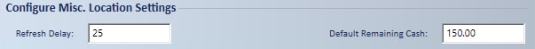
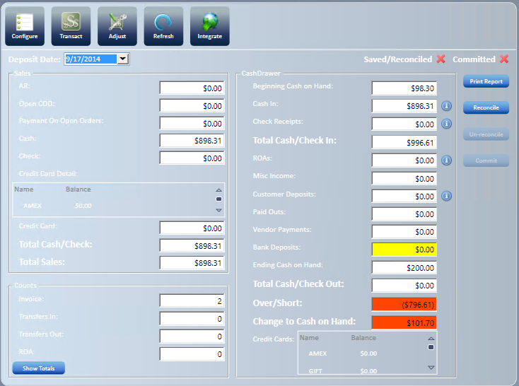
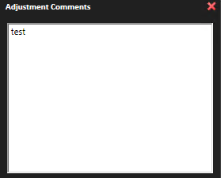

Cash Drawer
Use Cash Drawer to manage petty cash and reconcile the cash drawer. It also gives you an at-a-glance look at sales at any time of day, both in dollars and in number of transactions.
To open it, select Cash Drawer on the application toolbar.

Configure cash drawer settings
- Select Configure .
- Configure has three tabs: Company Txn. Types, Location Txn. Types and Misc. Settings.
- On the Misc. Settings tab, under Configure Misc. Location Settings, enter a cash value in Default Remaining Cash.

- Select Save.
- A message confirms the changes were saved.
Set up transaction types and GL accounts
- Company Txn. Types: add petty cash transaction types (Txn. Type Code, Description, Expense Account, Default Direction, Upper Limit, Print Receipt Required), and then select Save.
- Location Txn. Types: pick a location, set each transaction type's Default Printer, Print Receipt and Active, and then select Save.
- Misc. Settings: under Configure Misc. Company Settings, pick the GL Account for each credit card and other item. Select None to clear a GL Account.
Record a petty cash transaction
- Select the transaction type from the dropdown list.
- Enter the Amount of the transaction.
- Verify the default Direction, or change it from the dropdown if needed.
- Enter the Transaction Description.
- Verify or select the Print Receipt box.
- Select Save.
- To remove the transaction data instead, select Clear.
- The items display on the Transaction List.
- You can filter the list by the dropdown date ranges or a custom date range.
- You can print the list.

Reconcile daily transactions
- Verify the Deposit date. Select the dropdown box to view a calendar.
The reconciliation window has these sections:
- Sales: shows daily sales by payment method.
- Credit Card Detail displays above the credit card sales totals.
- Total sales: the sum of all payment types, which is the total sales for the selected deposit date.
- Counts: shows the number of transactions by transaction type, by default.
- Select to view the totals in dollars. Invoices then equal total sales.
- Cash Drawer: used to reconcile cash and prepare the bank deposit.
- Beginning Cash on Hand: the daily beginning balance.
- Cash In: equals the amount in Cash Sales.
- Check Receipts: equals the amount in Check Sales.
- Total Cash/Check In: beginning cash on hand plus cash in and check receipts.
- ROAs: total ROA payments collected.
- Misc Income: petty cash "In" transactions.
- Customer Deposits (Total Collected): total customer deposits collected by cash, check and credit card.
- Paid Outs: petty cash "Out" transactions.
- Vendor Payments: vendor payments from AP invoices for the day.
- BANK DEPOSIT: the only editable field. Enter the total amount of the bank deposit, which includes customer deposits, ROAs, and petty cash in or out.
- Ending Cash on Hand: starts at the Default Remaining Cash set in the cash drawer configuration. It drops below that amount only when paid outs and vendor payments are more than the cash taken in, and it is $0 when Total Cash/Check Out is more than Total Cash/Check In. Any other difference goes to Over/Short.
- When the System Setting CD - Keep Cash on Hand at Fixed Value is on, entering the bank deposit does not change Ending Cash on Hand.
- Over/Short: Total Cash/Check Out (paid outs, vendor payments and bank deposit) plus Ending Cash on Hand, minus Total Cash/Check In. A positive amount is over, and a negative amount is short.
- Enter the BANK DEPOSIT amount.
- To add a comment, select
 , enter your text, and close the comment dialog box. The comment saves with the daily cash drawer.
, enter your text, and close the comment dialog box. The comment saves with the daily cash drawer.

-
- Credit Card details
- Select Reconcile when the cash drawer reconciliation is complete.
- A message tells you the reconciliation is complete, and a green check mark shows that the daily transactions are saved and reconciled.
- Select Print to print the report for store or corporate office records.
Tip: Print the payout transactions for the day and attach them to the cash drawer report.
- Select Commit after you review the reconciliation.
- A confirmation window warns that the action can't be undone and asks whether to continue.
- Select No to go back to the reconciled cash drawer.
- Select Yes to commit. A message confirms the reconciliation was committed successfully.
- A confirmation window warns that the action can't be undone and asks whether to continue.
Important: Committing a reconciliation can't be undone.
Reports that help with reconciliation
- Sales Tender: recommended.
- Payment Type Totals: use when you are looking for credit card detail.
- Summary of Invoices
Note: These reports run from your store's report server. Report names and folders can differ. If you can't find one, ask your administrator.